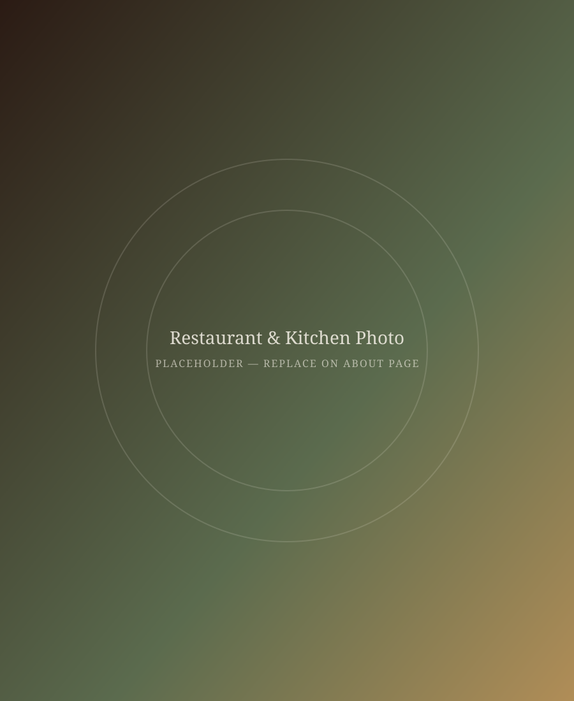

Our Story
About TEHERAN
TEHERAN was born from a simple idea: to bring the true taste of Iran to Koblenz. Every recipe on our table has been passed down through generations — slow-simmered stews, saffron-scented rice, and herbs picked for their freshness, not convenience.
We cook the way our families have always cooked, with patience and care, because Persian food is as much about hospitality as it is about flavor. Every guest who walks through our door is welcomed as one of our own — this is ta'arof, the Persian spirit of warmth and generosity.
From the first taste of tahdig to the last sip of tea, our aim is simple: to make you feel at home, wherever home may be.